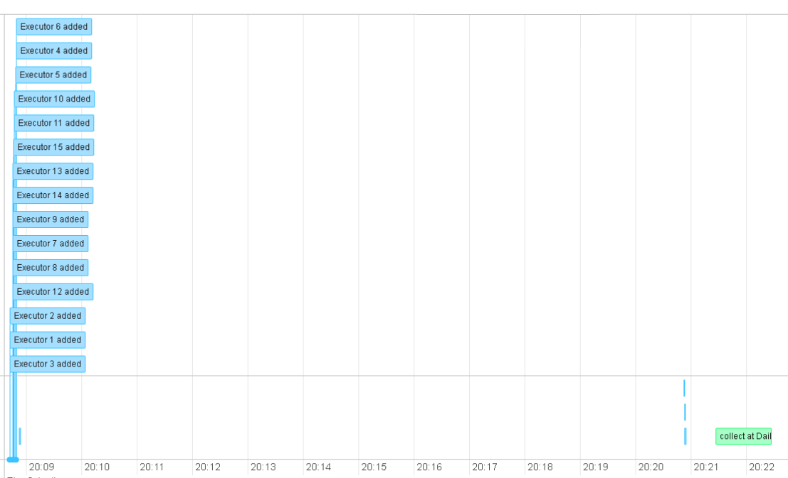
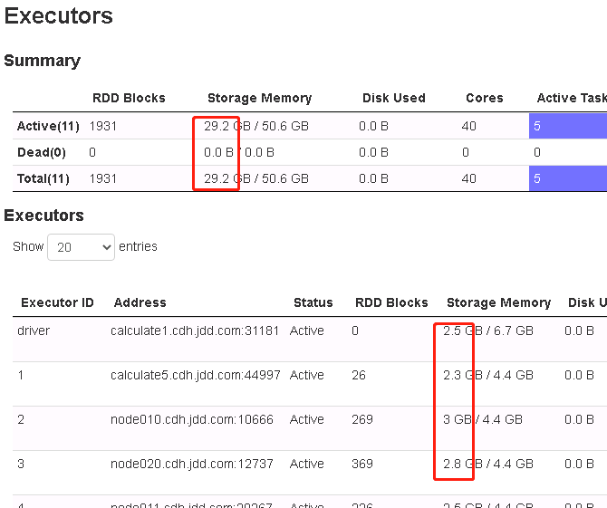
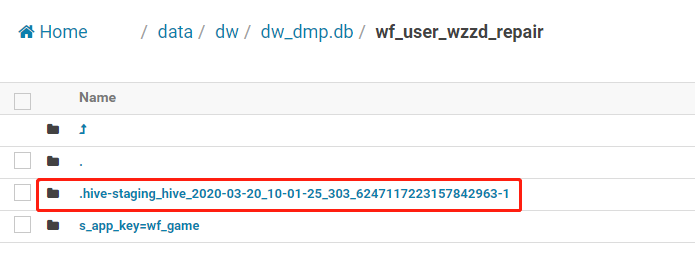

Spark的分区?怎么分区的？分区倾斜怎么办？
Spark的driver，client？
Spark怎样的分布式运行的？连接Mysql等关系型数据库进行分布式运算时，会不会造成数据库的连接过多。
dataset的分区数，初始分区数
Spark Streaming的批次大小怎么确定？
spark.sparkContext.defaultParallelism默认的并行度
Kafka作用，削峰异步解耦
spark程序配置中的混洗分区数
混洗分区多会导致内存使用过多吗？会导致GC问题的机率变大吗？200万数据的join，混洗分区50会GC问题(Exception in thread "dispatcher-event-loop-8" java.lang.OutOfMemoryError: GC overhead limit exceeded)，混洗分区为10则没有GC问题。具体原因待验证。
spark配置分别如下：
混洗分区50时：
config("spark.serializer", "org.apache.spark.serializer.KryoSerializer")
.config("hive.metastore.uris", "thrift://node001.cdh.jdd.com:9083")
.config("spark.dynamicAllocation.enabled", "false")
.config("spark.debug.maxToStringFields", "10000")
.config("spark.sql.adaptive.enabled", "true")
.config("spark.sql.adaptive.minNumPostShufflePartitions", "50")
.config("spark.sql.adaptive.maxNumPostShufflePartitions", "500")
.config("spark.sql.adaptive.shuffle.targetPostShuffleInputSize", "67108864")
.config("spark.sql.autoBroadcastJoinThreshold", "200485760")
.config("spark.sql.broadcastTimeout", 1200)
.config("spark.locality.wait", "6")
.config("spark.shuffle.file.buffer", "64")
.config("spark.reducer.maxSizeInFlight", "96")
混洗分区10时
sparkConf.set("hive.exec.dynamic.partition", "true"); //支持动态分区
sparkConf.set("hive.exec.max.created.files", "100000"); //设置能够创建最大的文件数
sparkConf.set("hive.exec.max.dynamic.partitions", "100000"); //设置一个dml语句允许创建的所有分区的最大数量
sparkConf.set("hive.exec.dynamic.partition.mode", "nonstrict"); //
sparkConf.set("hive.exec.max.dynamic.partitions.pernode", "100000"); //每一个mapreduce job允许创建的分区的最大数量
sparkConf.set("dfs.permissions", "false");
sparkConf.set("hive.metastore.uris", "thrift://node001.cdh.jdd.com:9083");
sparkConf.set("spark.network.timeout", "360");
sparkConf.set("spark.sql.shuffle.partitions", "10");
sparkConf.set("spark.shuffle.service.enabled", "true");
sparkConf.set("spark.dynamicAllocation.enabled", "false"); //动态申请executor，默认true
sparkConf.set("spark.yarn.executor.memoryOverhead", "3072"); // M
sparkConf.set("spark.sql.autoBroadcastJoinThreshold", "5000");
sparkConf.set("spark.debug.maxToStringFields", "5000");
sparkConf.set("spark.serializer", "org.apache.spark.serializer.KryoSerializer");
sparkConf.set("mapreduce.job.inputformat.class", "org.apache.hadoop.mapreduce.lib.input.CombineFileInputFormat");
sparkConf.set("mapreduce.input.fileinputformat.split.maxsize", "268435456");
sparkConf.set("spark.kryoserializer.buffer.max", "1024m");
sparkConf.set("spark.driver.maxResultSize", "4096");
spark.default.parallelism，是如join，reduceByKey，parallelize这些转换操作返回的RDD的默认分区数。并且spark.default.parallelism只对RDD起作用，对dataframe不起作用。
spark.sql.shuffle.partitions配置joins或aggregations混洗时使用的分区数。
分区数多少的影响：分区太少不能充分利用集群的资源，对程序的执行效率影响较大；分区太多，会在管理许多许多的小tasks上产生过多的开销，1000个以下的分区数，不会对程序效率产生太大影响，但是如果有数万个则会导致程序变得非常慢。默认分区数可以设置为核心数的2~4倍。
广播变量的使用
inner join，多字段关联，两个30万左右的数据集，结果竟然90多亿条数据，用distinct解决
Spark程序跑的慢，连接执行慢，可能只是因为少了一个distinct。
Spark优化：基于分区（相比基于每条记录，减少配置次数；相对于collect到driver中，避免了数据量过大导致的OOM）
Spark Sql 自适应执行：
- shuffle partition个数
- 数据倾斜
- Runtime执行计划优化
https://help.aliyun.com/document_detail/93157.html
http://www.jasongj.com/spark/adaptive_execution/
Spark SQL架构：

从上图可见，无论是直接使用 SQL 语句还是使用 DataFrame，都会经过如下步骤转换成 DAG 对 RDD 的操作
- Parser 解析 SQL，生成 Unresolved Logical Plan
- 由 Analyzer 结合 Catalog 信息生成 Resolved Logical Plan
- Optimizer根据预先定义好的规则对 Resolved Logical Plan 进行优化并生成 Optimized Logical Plan
- Query Planner 将 Optimized Logical Plan 转换成多个 Physical Plan
- CBO 根据 Cost Model 算出每个 Physical Plan 的代价并选取代价最小的 Physical Plan 作为最终的 Physical Plan
- Spark 以 DAG 的方法执行上述 Physical Plan
- 在执行 DAG 的过程中，Adaptive Execution 根据运行时信息动态调整执行计划从而提高执行效率
在Spark SQL中，由AstBuilder来构建一个逻辑算子和表达式组成的抽象语法树。
AstBuilder是一个基于ANTLR的SQL解析器，使用的是
SqlBase.g4文件中描述的SQL语法，把一个ANTLR4 ParseTree转换为一个catalystExpression，LogicalPlan或者TableIdentifier。
通过SparkSession.sql(...)方法的描述，通过spark.sql.dialect可以设置用于sql解析的方言：
/**
* Executes a SQL query using Spark, returning the result as a `DataFrame`.
* The dialect that is used for SQL parsing can be configured with 'spark.sql.dialect'.
*/
def sql(sqlText: String): DataFrame = {
Dataset.ofRows(self, sessionState.sqlParser.parsePlan(sqlText))
}
尝试一下使用sqlParser来获取Logical Plan：
scala> import spark.sessionState.sqlParser
import spark.sessionState.sqlParser
scala> sqlParser.parsePlan("select * from ids_ttable")
res2: org.apache.spark.sql.catalyst.plans.logical.LogicalPlan =
'Project [*]
+- 'UnresolvedRelation `ids_ttable`
Spark SQL的使用QueryExecution来处理Logcial Plan，QueryExecution是一个结构化的查询执行工作流（a structured query execution pipeline）：
QueryExecution：使用Spark执行关系查询（relational queries）的主要工作流。开发者可以轻松的访问query execution的中间阶段。可以用来debug。
查看一个Dataset的QueryExecution：
scala> val ds = spark.sql("select * from ids_ttable limit 10")
ds: org.apache.spark.sql.DataFrame = [id: int]
scala> val qe = ds.queryExecution
qe: org.apache.spark.sql.execution.QueryExecution =
== Parsed Logical Plan ==
'GlobalLimit 10
+- 'LocalLimit 10
+- 'Project [*]
+- 'UnresolvedRelation `ids_ttable`
== Analyzed Logical Plan ==
id: int
GlobalLimit 10
+- LocalLimit 10
+- Project [id#3]
+- SubqueryAlias ids_ttable
+- Project [value#1 AS id#3]
+- LocalRelation [value#1]
== Optimized Logical Plan ==
GlobalLimit 10
+- LocalLimit 10
+- LocalRelation [id#3]
== Physical Plan ==
CollectLimit 10
+- LocalTableScan [id#3]
/**也可以使用Dataset的explain函数*/
scala> ds.explain(true)
== Parsed Logical Plan ==
'GlobalLimit 10
+- 'LocalLimit 10
+- 'Project [*]
+- 'UnresolvedRelation `ids_ttable`
== Analyzed Logical Plan ==
id: int
GlobalLimit 10
+- LocalLimit 10
+- Project [id#3]
+- SubqueryAlias ids_ttable
+- Project [value#1 AS id#3]
+- LocalRelation [value#1]
== Optimized Logical Plan ==
GlobalLimit 10
+- LocalLimit 10
+- LocalRelation [id#3]
== Physical Plan ==
CollectLimit 10
+- LocalTableScan [id#3]
Spark的Accept状态，都在做什么？只是等待资源？为什么会等待很久——几个小时？大概是等资源吧。
Accept状态时是在执行初始化SparkSession之前的代码，以及分配资源进行SparkSession的初始化。
从日志推测：首先启动ApplicationMaster：Preparing Local resources；启动ApplicationAttemptId；启动user application；初始化spark context；spark context提交应用；启动sparkDriver；获取资源启动executor，之前是不是先启动容器呢？再之前YARN调度呢……
Event Timeline出现了巨长的空白，怎么回事呢？生成执行计划？生成sql吗?

视图
Local Temporary View
Local temporary view is session-scoped. Its lifetime is the lifetime of the session that create it,i.e. it will be automatically dropped when the session terminates. It's not tied to any databases, i.e. we can't use `db1.view1` to reference a local temporary view.
Global temporary view
Global temporary view is cross-session. Its lifetime is the lifetime of the Spark application, i.e. it will be automatically dropped when the application terminates. It's tied to a system preserved database `global_temp`, and we must use the qualified name to refer a global temp view, e.g. `SELECT * FROM global_temp.view1`.
def dropTempView(viewName: String): Boolean
def dropGlobalTempView(viewName: String): Boolean
This method drops the view with the given view name in the catalog. If the view has been cached before, then it will also be uncached.
Spark SQL运行过程中是否也会根据情况自动Cache一些RDD？？发现dropTempView和unpersist还是会清除不掉缓存（Spark Web UI的Storage中的RDD缓存一致都存在），但是改用spark.catalog().clearCache()（从内存中删除所有缓存的表）可以将它们清除。
Spark Web UI的“Executors”中，Storage Memory一直在增加（increasing overtime）

程序运行2个小时左右，Executors的Storage Memeory一直在增加，最初怀疑是大量的DataFrame cache导致的，但是进行了spark.catalog().clearCache()操作后，清除RDD的缓存，而Storage Memeory依旧在增长。
不知道是不是Spark Web UI的bug，还是说是内存泄露导致的？？
之前没有注意过，似乎所有的Spark应用的Storage Memeory都存在递增的情况。但是Storage Memory过大，应该还是有需要优化的地方。
Spark Executor GC Time
Hive/Impala的实时性。ALTER TABLE的原因吗？感觉修改数据后，查询表的修正结果会有延时。
resolved attribute(s) xxxxx#xxx missing from...
20/02/27 12:11:04 ERROR yarn.ApplicationMaster: User class threw exception: org.apache.spark.sql.AnalysisException: resolved attribute(s) recharge_level#738 missing from app_id#300L,is_parent_channel#336,recharge_level#113,user_id#298L,parent_id#337L,channel_id#257L in operator !Project [user_id#298L, app_id#300L, channel_id#257L, is_parent_channel#336, parent_id#337L, recharge_level#738];;
Project [app_id#84L, channel_id#80L, is_parent_channel#65, recharge_level#113, dau#412L, channel_user_count#414L, level_in#349L, level_out#360L]
+- Join LeftOuter, ((((app_id#84L = app_id#825L) && (channel_id#80L = channel_id#782L)) && (is_parent_channel#65 = is_parent_channel#861)) && (recharge_level#113 = recharge_level#738))
……
……
……
: +- CatalogRelation `dw_wf_fish`.`channel_info`, org.apache.hadoop.hive.serde2.lazy.LazySimpleSerDe, [id#67L, parent_id#68L, code#69, name#70, description#71, enable#72, create_time#73, update_time#74, delete_flag#75]
+- Project [user_id#34L, recharge_level#60 AS p_level#128]
+- Project [user_id#34L, CASE WHEN ((vip_level#32 = 0) && (cast(total_recharge_money#33 as decimal(18,2)) = cast(cast(0 as decimal(10,0)) as decimal(18,2)))) THEN -1 WHEN ((vip_level#32 = 0) && NOT (cast(total_recharge_money#33 as decimal(18,2)) = cast(cast(0 as decimal(10,0)) as decimal(18,2)))) THEN 0 ELSE vip_level#32 END AS recharge_level#60]
+- Project [user_id#34L, CASE WHEN isnull(vip_level#51) THEN 0 ELSE cast(vip_level#51 as int) END AS vip_level#32, CASE WHEN isnull(total_recharge_money#38) THEN cast(0.00 as decimal(18,2)) ELSE total_recharge_money#38 END AS total_recharge_money#33]
+- Filter ((s_app_key#54 = wf_fish) && (p_day#55 = 20191229))
+- SubqueryAlias fish_user_basic_data
+- CatalogRelation `dw_dmp`.`fish_user_basic_data`, org.apache.hadoop.hive.serde2.lazy.LazySimpleSerDe, [user_id#34L, register_time#35, phone_type#36, register_channel#37, total_recharge_money#38, balance_gold_money#39, balance_diamond_money#40, last_system_version#41, last_app_version#42, last_login_channel#43, last_create_order_channel#44, last_inventory_channel#45, last_bet_channel#46, last_active_time#47, user_type#48, battery_grade#49, recharge_count_num#50, vip_level#51, total_inventory_money#52, total_login_days#53], [s_app_key#54, p_day#55]
报错的代码是：数据集a和数据集b用条件xa进行join，用（经过简单的逻辑、数学计算）产升的数据集c和数据集d、e用相同的条件xa进行join；结果就报错resolved attribute(s) xxxx missing from...了。其中xxxx是条件xa中的某一个列（这一列在数据集b中使用as取了别名，以进行join）。
避免错误的代码是：直接用数据集a和数据集b，d，e用条件xa进行join，再进行（那些简单的逻辑、数学计算）。
网上查到的可能的原因是：数据集的引用的重用会导致命名的模糊；感觉解释的不够有说服力。不知道是不是数据集b起别名导致了命名上的问题。查看了一下报错：报错丢失的是recharge_level#738，join条件解析的结果是：
((app_id#84L = app_id#825L) && (channel_id#80L = channel_id#782L)) && (is_parent_channel#65 = is_parent_channel#861)) && (recharge_level#113 = recharge_level#738))
其中recharge_level#后面的数据不同的有几处，但是，查看了修改后正常的sql，也有很多不同的recharge_level#。
Impala和Hive查询结果不一致！！
后来发现，查询前一天的分区的时候，结果是一样的；原来查询的是实时的埋点表，想到了执行REFRESH命令，执行了之后，结果就一样了。所以，Impala查询实时表，最好要先执行REFRESH。
Hive insert顺序
对Hive表执行insert或者insert overwrite时，数据的字段顺序必须和Hive表结构的字段属性完全一致。不然会导致数据的错位。
Hive临时文件
通过hive-sql、hue、spark-sql等提交Hive表的select或者insert overwirte时，会产生临时文件目录.hive-staging_hive_xxxxxxx，用于存放临时的执行结果，对于用户这个临时目录是不能访问的；比如insert overwrite会将结果暂存在该目录下，待任务执行结束，将结果复制到hive表中。

该临时文件的默认目录为，操作的hive表的根目录，即默认配置为：
<property>
<name>hive.exec.stagingdir</name>
<value>.hive-staging</value>
</property>
可以对其进行修改，以统一管理该临时文件：
<property>
<name>hive.exec.stagingdir</name>
<value>/tmp/hive/.hive-staging</value>
</property>
该配置对Hive有效，对spark-sql不起作用，貌似是spark-sql的bug。
一般，hive-staging文件会自动删除；两种情况下，hive-staging文件不会自动删除：
- 任务执行过程中出现异常；
- 长时间保存连接或者会话。
如果不能自动删除临时文件，可以考虑使用shell脚本定时进行清理。
Cannot overwrite a path that is also being read from.
创建了一个存储格式为parquet的Hive表，使用Spark SQL读取表中的数据进行处理然后和表进行UNION创建临时表，再通过INSERT OVERWIRTE TABLE ...把临时表数据插入到这个Hive表，结果报以下错误：
20/04/26 17:47:42 ERROR yarn.ApplicationMaster: User class threw exception: org.apache.spark.sql.AnalysisException: Cannot overwrite a path that is also being read from.;
org.apache.spark.sql.AnalysisException: Cannot overwrite a path that is also being read from.;
at org.apache.spark.sql.execution.datasources.DataSourceAnalysis
at ...
在网上搜索原因，有些说是通过Hive SQL可以，但是Spark SQL不行；这个没有尝试。
一般提供的解决方案是先写入一个临时表作为中间过程，再从临时表覆盖目标表。
看到有一个将Hive表格式改为orc后可以执行的类似帖子，就把表的存储格式改为了textfile，然后就可以了。
还看到有介绍通过spark的checkpoint（checkpoint breaks data lineage）来解决类似问题的，不了解checkpoint没有尝试。
Shutdown hook called before final status was reported.
报这个错，有时候是因为程序有异常；
在spark job提交后非正常的停止该job，比如shell提交执行，又用Ctrl+C停止job，也会报这个；
另外如果在Spark代码中为了结束程序，加入了System.exit(0)，不管是加在生成SparkContext之前，还是在调用了SparkSession.stop()之后；当在yarn cluster执行时都会有该错误或者提示。
20/05/09 11:18:31 INFO yarn.ApplicationMaster: Final app status: FAILED, exitCode: 16, (reason: Shutdown hook called before final status was reported.)
20/05/09 11:18:31 INFO util.ShutdownHookManager: Shutdown hook called
大概是Spark在结束作业之前会进行一系列的处理，比如上报作业最终状态，删除staging目录/.sparkStaging/application_1577764249201_982227等等；如果没有完成这些处理就会报这个消息。
用return关键字可以提前结束spark job，结果状态还是success。
过多的执行计划导致OOM？？
平台上执行复杂查询，OOM，根据日志提示的结局方法：
-- SET spark.driver.memory=6/8G;【还是OOM】
set spark.sql.autoBroadcastJoinThreshold=-1;【解决问题】
spark.sql.autoBroadcastJoinThreshold配置进行join时一个表能够被广播到所有节点的最大的数量（单位字节，默认值10485760，即10M）。把这个值设置为-1可以禁用广播。目前，只支持已经运行过ANALYZE TABLE <tableName> COMPUTE STATISTICS noscan命令的Hive Metastore表。貌似这个配置是实验性的配置选项（experimental options）。
和空的Dataset进行内连接，结果报错了：
User class threw exception: org.apache.spark.sql.catalyst.errors.package$TreeNodeException: execute, tree:
Exchange SinglePartition
.
.
.
上面的错误是最终作业结束时的报错，过程中报的错误是：
Exception in thread "broadcast-exchange-1" java.lang.OutOfMemoryError: Not enough memory to build and broadcast the table to all worker nodes.
奇怪，为什么和空的dataset进行join会报这个错。
Spark SQL的执行是依赖Hive 表的Schema的，虽然Hive 表是读时模式，但是使用Spark SQL插入Hive表时，还是会验证表的Schema。
Spark中JDBC更新效率很慢的问题
应该是索引的关系；经过实践：改为联合唯一索引后，Spark程序中的update（where条件就是联合唯一索引）变得非常快。不知道是否与锁有关。Unique锁，会不会导致只锁一行？而普通索引会锁相同索引的行吗？mysql默认的autocommit为true，autocommit为false才会有锁吗？
User class threw exception: org.apache.spark.sql.AnalysisException: Can't extract value from c_operate_size#31 AS d_st_covershowtype#59: need struct type but got string;
本来不知道为何会出现了
struct type，经查看代码发现'c_operate_size.as("d_st_covershowtype")后面丢失了逗号,。不知为何会被Spark理解为struct type。'c_operate_size.as("d_st_covershowtype") (unix_timestamp('d_act_time) * -1 + refSeconds).as("d_st_ctime"),
ALTER TABLE RECOVER PARTITIONS only works on table with location provided
创建hive外部表，有分区p_day，使用SaveMode.Overwrite保存数据，期望能够覆盖指定的分区
res.write.mode(SaveMode.Overwrite).partitionBy("p_day").format("parquet")
.saveAsTable("db.table")
报错：
User class threw exception: org.apache.spark.sql.AnalysisException: Operation not allowed: ALTER TABLE RECOVER PARTITIONS only works on table with location provided: `db`.`table`;
看了HDFS，分区的文件已经生成，在Hive中执行ALTER TABLE ADD PARTITION(...)后，查看数据也是正常的；问题应该是出在不能执行ALTER TABLE RECOVER PARTITIONS。后来发现表变成了内部表（managed table，根据数据的schema创建的），看来是SaveMode.Overwrite把创建的表给覆盖了，本来以为这个选项可以只覆盖分区的，原来，它的功能是覆盖表。但是，既然Spark SQL把数据已经放入HDFS，只需把分区信息加到Hive metastore，应该就可以了。
Spark 2.2.0有一个方法sparkSession.catalog.recoverPartitions()：
/**
* Recovers all the partitions in the directory of a table and update the catalog.
* Only works with a partitioned table, and not a view.
*
* @param tableName is either a qualified or unqualified name that designates a table.
* If no database identifier is provided, it refers to a table in the
* current database.
* @since 2.1.1
*/
def recoverPartitions(tableName: String): Unit
根据Hive RecoverPartitions文档 ALTER TABLE table_name RECOVER PARTITIONS;是一个EMR（Amazon Elastic MapReduce）操作。此处使用的是Hive，等价的操作应该是MSCK [REPAIR] TABLE table_name [ADD/DROP/SYNC PARTITIONS];，不知道是Spark SQL对Hive支持的bug，还是Spark SQL的配置问题。
Can only write data to relations with a single path.
往Spark SQL创建的托管表执行spark.sql("insert overwrite table...")或者spark.sql("insert into table...")报错：
org.apache.spark.sql.AnalysisException: Can only write data to relations with a single path.;
但是用Hive创建托管表，在执行就是可以的，Hive创建的外部表也是可以的。
从报错的stacktrace查找，发现源码有一个sanity check：
// Sanity checks
if (t.location.rootPaths.size != 1) {
throw new AnalysisException(
"Can only write data to relations with a single path.")
}
难道是，Spark SQL创建的内部表t.location.rootPaths.size为0，总不应该大于1吧？但是，如果表不存在报的错应该是org.apache.spark.sql.AnalysisException: Table or view not found:xxxxxx。而，spark.catalog.tableExists("db","table")执行的结果又是true。这个location.rootPaths是啥？费解……
对比Spark SQL创建的内部表和Hive创建的内部表，前者多了spark.sql.sources.provider=parquet并且spark.sql.sources.schema.part.0中fields中的字段属性metadata是空的，而后者不是空的。但是似乎这并不该是导致错误的原因。
Hive 锁表？
show locks
unlock table <table_name>
Spark application失败,但是Spark Web UI仍然有活跃的jobs，Yarn application Web UI显示的状态是Failed，Spark Web UI的bug？？
Spark使用to_date(str)函数，比使用substring(str,1,10)早了一天，例如，str为2021-03-01 xx:xx:xx，前者结果2021-02-28。奇怪了……用到了时区吗？？？还是……将to_date(str)作为连接条件导致了什么变化？？
Spark Structured Streaming的输出延时socket 数据源，option("includeTimestamp", true)，使用窗口和水印的聚合。
Spark WebUI 有时候看到有job 为 run at ThreadPoolExecutor.java:1149 ，一直疑惑是什么，看StackOverflow上一个回答，似乎是Spark join时，如果是 broadcastjoin，会起一个线程发送数据到executors。大概需要发送数据到其他executors时都会发生吧？！
当禁用了 broadcastjoin（设置 spark.sql.autoBroadcastJoinThreshold 为 -1）后，的确就不会出现了。
Dataset 的 repartition()
df repration() 之后保存为parquet格式的hive表，大小比不执行 repartition()会变大很多（之前 60M 之后209M），不知道是不是因为 repartion() 操作按照 roundrobin 的方式重新为混洗之后的数据进行分区，导致数据不够紧凑，从而导致 Parquet 编码后的文件占用空间变大。
缺省参数的repartion() 是 RoundRobinPartitioning，当指定的分区列（列类型应该为 nonSortOrder 类型）时执行的是 HashPartitioning。
repartitionByRange(numPartitions:Int, partitionExprs: Column*) 分区列为 SortOrder 类型，执行的是 RangePartitioning。
repartition 缺省的分区数量为 spark.sql.shuffle.partitions。
spark.sql.adaptive.enabled
启用该配置，自适应混洗分区个数后，spark.sql("insert overwrite table ....") 会产生多个 job，而不启用该配置则只有一个job。不知道为什么……
spark-submit 的 --jars 指定 jar 包的优先级
似乎是 --jars 中先指定的 jar 包优先级高；遇到的情况是——先制定了高版本的 mysql-connector jar，后指定的 shaded jar 中包含了低版本的 mysql-connector jar，生效的是高版本的 mysql-connector jar；如果调换二者顺序生效的就是低版本的 mysql-connector jar。
Spark 修改 Hive 表内容，Impala 能查到最新的结果，但是 Hive 查到的是修改前的结果！！
原因不明……具体操作是增加了 Hive 表字段。
sparksession.sql("insert overwrite table ...") 返回的结果是空 DataFrame。
SparkSession 只存在于 Driver 中，只能在 Driver 中调用 SparkSession
val modeMapAcc = spark.sparkContext.collectionAccumulator[util.Map[String, String]]("mode-map")
df.foreach(
r => {
modeMapAcc.add(new util.HashMap[String, String]() {
put(r, sparkSession.sql(...).head().getAs[Any](0).toString)
})
}
)
如果 df 分区不是全都在 Driver 上保存，那么执行 foreach 操作时，会有在 Executor 中调用 SparkSession的情况，那么将会抛出异常：
...
Caused by: java.lang.NullPointerException at org.apache.spark.sql.SparkSession.sessionState$lzycompute(SparkSession.scala:142) at org.apache.spark.sql.SparkSession.sessionState(SparkSession.scala:140) at org.apache.spark.sql.SparkSession.sql(SparkSession.scala:641) at
...
java.lang.UnsupportedOperationException: parquet.column.values.dictionary.PlainValuesDictionary$PlainLongDictionary
Caused by: java.lang.UnsupportedOperationException: parquet.column.values.dictionary.PlainValuesDictionary$PlainLongDictionary
at parquet.column.Dictionary.decodeToBinary(Dictionary.java:44)
at org.apache.spark.sql.execution.datasources.parquet.ParquetDictionary.decodeToBinary(ParquetDictionary.java:51)
at org.apache.spark.sql.execution.vectorized.WritableColumnVector.getUTF8String(WritableColumnVector.java:380)
at ... ...
修改了保存格式为 Parquet 的分区的 Hive 表某个字段的类型（比如 bigint 改为 string），之后读取多个分区（包含了修改前和修改后），就报这个错。将修改前的分区数据重新跑一边就行了。原因是 Parquet 检测到了不同分区（文件）字段的类型不一致！！
如果对 df 进行 cache()，df.first() 算子，只会让部分（某一个）分区刷入缓存吗？
Spark 读取 Hive 时，报错 Caused by: java.io.IOException: Not a file: hdfs://nameservice/data/dw/xxx.db/xxxxxxxx/xxxx=xx/xxx=xxx/xxx=4465/xxx_4465_tmp07303
大概 Spark 读取 Hive 时，使用的是 Hive 的 Metastore，如果 MetaStore 中的分区、表对应的文件不存在，就会报错。
这种情况下，可能是表（分区）文件因为被删除了；解决方法——要么恢复被删除的文件，要么将对应的分区（表）从 MetaStore 中删除（比如 ALTER TABLE XX DROP PARTION(XX=XX,XX=XX)）。
Spark SQL 中除法（/）的运算结果是 Double 类型的。如果用 round 保留多位小数，可能会导致用科学记数法表示（比如，6E-4），在往 mysql 进行 jdbc 插入时，会出现 Not a Numberic... 之类的错误。
解决方式是，进行强制转换，将其转换为 decimal 类型：
df.select('percent_bulala.cast("deciaml(6, 4)").as("percent_bulala"))
其中 decimal 必须指定精度和小数位数，不然默认的小数位好像是 0。